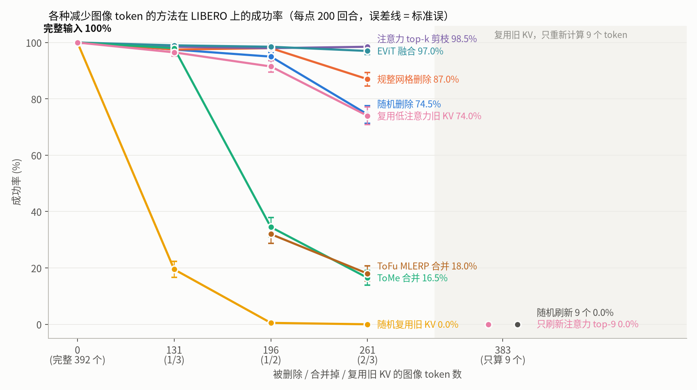
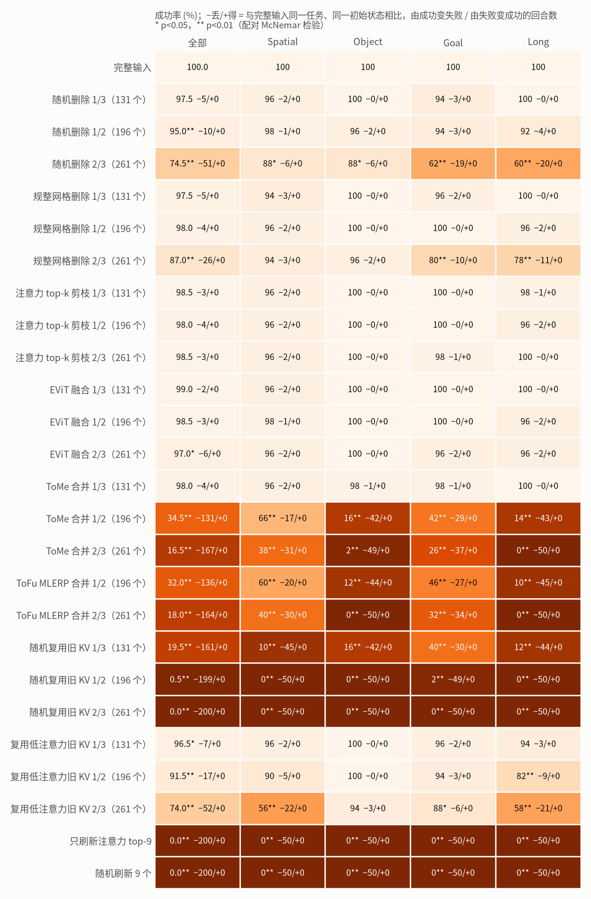
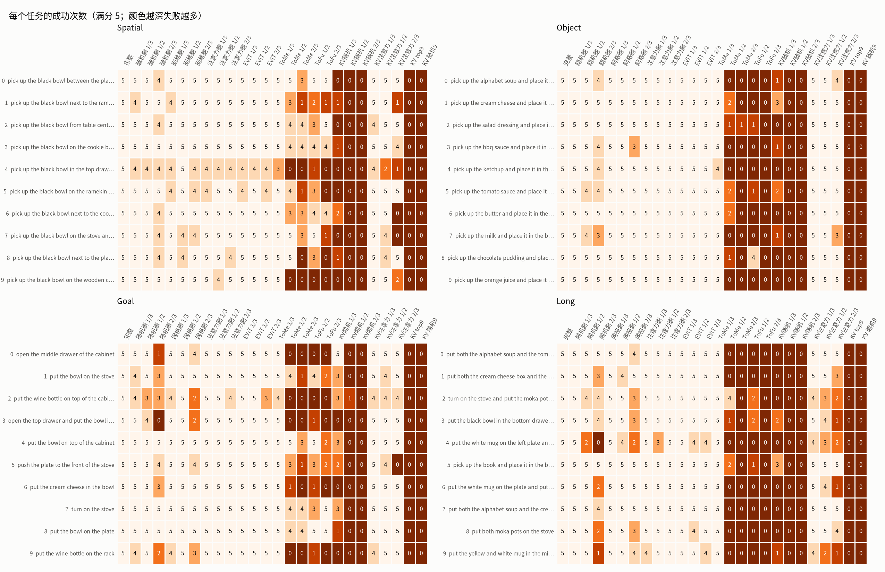
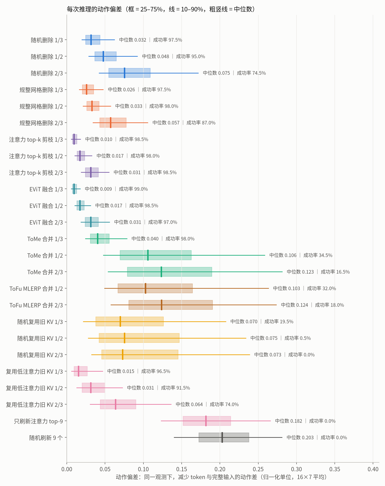
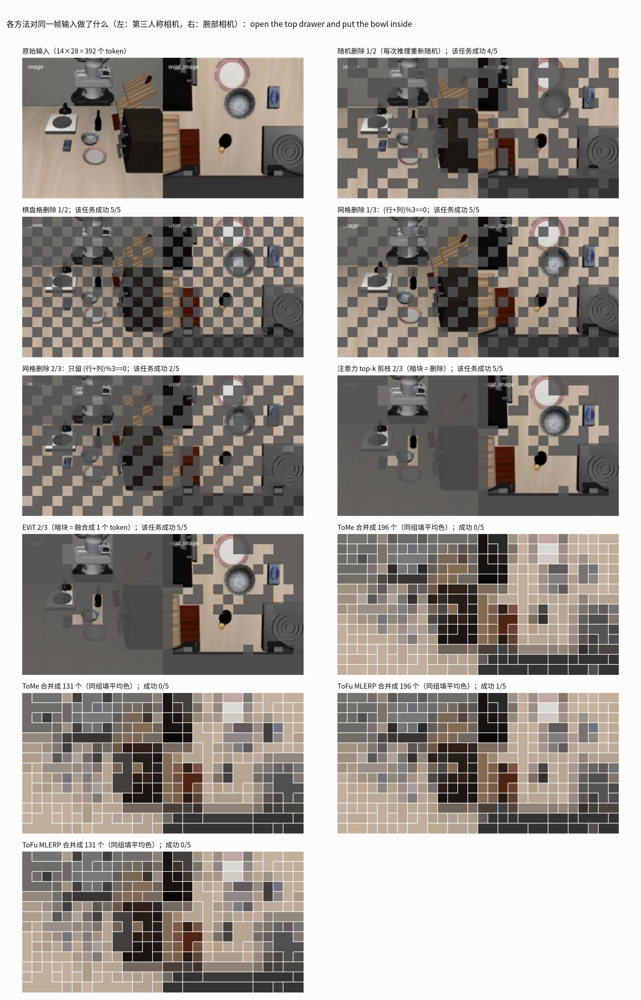
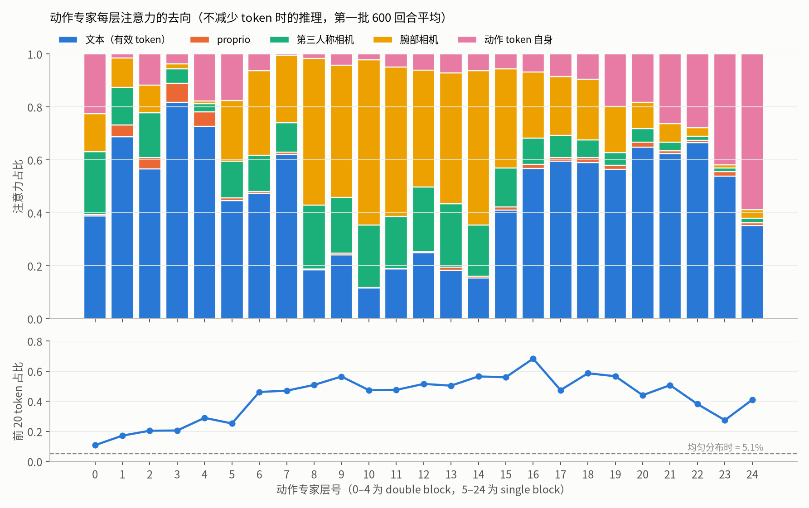
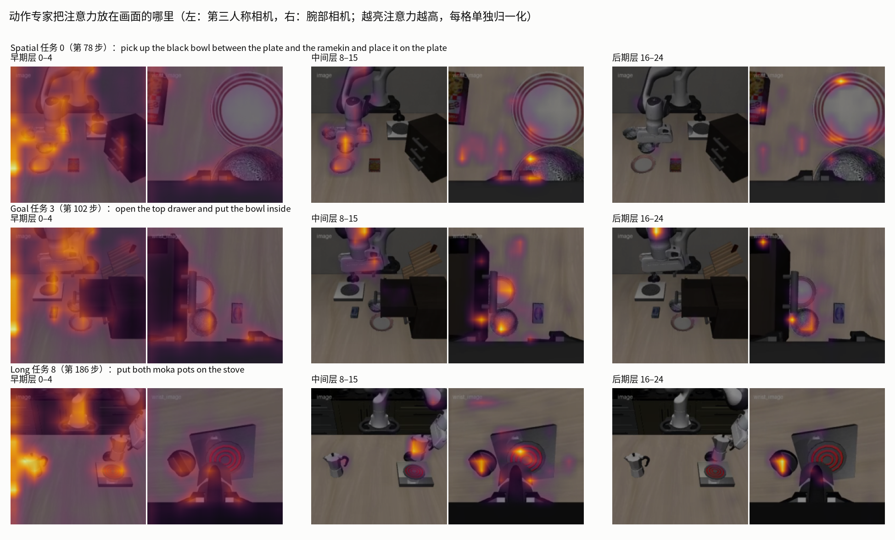
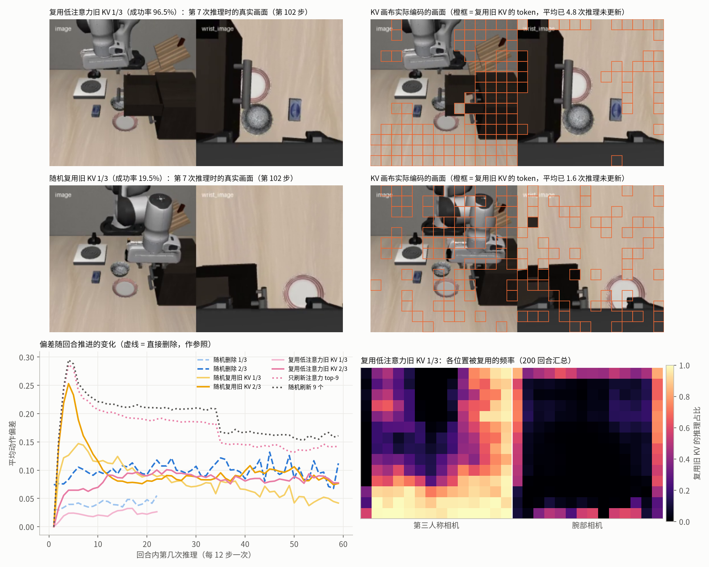
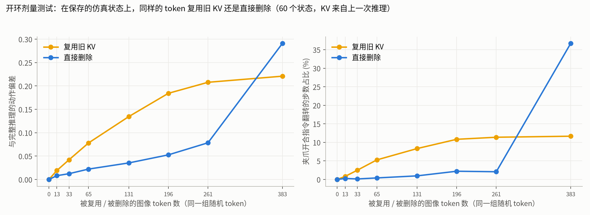

LIBERO：减少 ImageWAM-FLUX.2-4B 的图像 token（OSMesa 渲染，每个条件 200 回合）
- 随机删除 / 规整网格删除：在注意力中屏蔽被选中的 token（等价于从序列中拿掉）；随机的每次推理重新选，网格为固定的斜格或棋盘格。
- 注意力 top-k 剪枝：每次推理先用完整输入跑 prefill 和第 1 步去噪，按动作对图像的注意力保留最高的 token，删除其余。
- EViT：与 top-k 相同的选择，但被去掉的 token 按注意力加权融合成 1 个 token。
- ToMe / ToFu MLERP：在 VAE latent 上按相似度两两匹配合并，注意力加 log(大小)；ToFu 合并后保持组内最大范数。
- 复用旧 KV：被选中的 token 不重新计算，每层的 K/V 取该 token 上次计算时的值（每回合第一次推理全算）；按注意力刷新 = 只重新计算上一次推理注意力最高的 token。

去掉 2/3 的图像 token：按注意力保留 98.5%（EViT 97.0%），规整网格 87.0%，随机 74.5%；ToMe 16.5%，ToFu 18.0%。复用旧 KV 1/3：按注意力刷新 96.5%，随机 19.5%。

每个条件 200 回合（4 个 suite × 10 任务 × 5 初始状态），与完整输入逐回合配对检验。

逐任务的成功次数（每格满分 5）。

同一观测下减少 token 与完整输入的动作差；复用旧 KV 只统计实际复用的推理。

同一帧上各方法删掉、融合或合并了哪些 token；注意力保留的是机械臂、碗、盘子和腕部视野里的物体。

早期和后期层主要看文本，中间层主要看腕部相机；中间层里 392 个图像 token 中前 20 个占约一半图像注意力。

注意力叠加在真实画面上：中间层集中在腕部相机里的夹爪和被抓物体。

复用 1/3 旧 KV：按上次注意力选择复用低注意力 token（上）时画布与当前画面基本一致，随机复用（中）会把移动中的机械臂和夹爪换成旧画面；被复用的主要是静止背景（右下）。

在相同的仿真状态和相同的 token 上，复用旧 KV 的偏差是直接删除的 3–4 倍；只有几乎全部复用时才反过来。